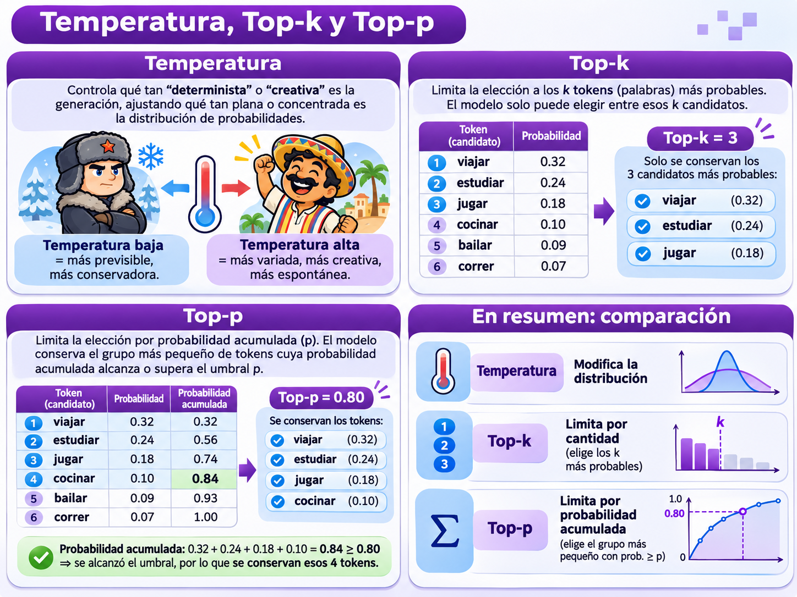

Longitud, latencia, throughput y costos
Cuatro métricas clave para comprender rendimiento y costo en inferencia generativa.

Más longitud puede aumentar latencia y costo; más throughput permite atender más solicitudes; el modelo más grande no siempre es la mejor opción.